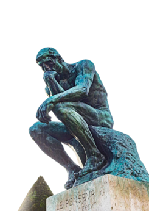

Maphiloexpress.com

Kit de révision express pour réussir l’épreuve du Bac
Les 17 Notions (1 fiche par notion)
[Les fiches sur l’Art et le Langage sont en téléchargement gratuit]
Les grands philosophes, leurs œuvres majeures, leur doctrine avec une brève biographie (1 fiche)
Les branches et les principaux courants de la Philosophie (1 fiche)
Les grands mythes et métaphores de la Philosophie, leur signification et comment s’en servir (1 fiche)
Méthodologies de l’explication de texte et de la dissertation avec exemples (2 fiches)
Les 22 fiches(*) sont en téléchargement pour 5 €
(*) 150 pages environ